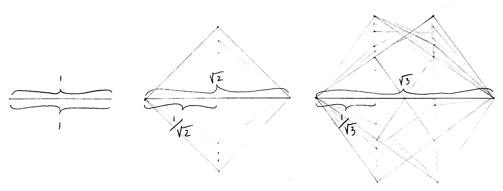

That were the universe but one spinning sphere
No free parameters
The wishdrops conjecture
That were the universe but one spinning sphere. A belief and a lament simultaneously. The belief is that a single sphere of infinite dimension, spinning forever with no preferred direction, is the energetic wellspring of the universe we experience. We call this the wishdrops conjecture. A simple, elegant, latent geometry underpins our vast, complex physical universe – that's our guess, at least. Particles, constellations, time, physics, even the sensory apparatus, right up to the spirit window, the experiential aperture, the seat of consciousness, whatever you want to call it, all the unfolding shadow of a dynamic, holographic sphere. Think of it as a very literal interpretation of the oft cited “God is an infinite sphere whose center is everywhere and whose circumference is nowhere.” This concept first appears around the 12th century, in the Latin text The Book of Twenty-four Philosophers, though it perhaps hovered in the contemplative ether for a long time before that. We wonder whether modern history misunderstands that it was meant as more than a metaphor. Like maybe the ancients knew something we have since lost.
The lament is how ineffective our explanation will be. At least we think so.
Only one way to find out !
We'll use math (mostly high school level), physics, and intuition to elaborate on our pet ratios – not dogs over cats, but principled comparisons between energies, lengths, and masses that give us a warm feeling inside when we think about the secret geometry behind them, even as we might have made it up. Hopefully that will break the ice. The idea is that these ratios are fingerprints of the otherwise unobservable, with suggestive, recurring signatures offering explanatory power, perhaps, but probably not much else. That is to say, there may be no new physics here – or maybe there is, but who cares, since we take real physics at face value and treat it as evidence, not something to overturn – nor proof of anything true, as it were, so let's be right up front about how we want the reader to treat the following semi-metaphysical discourse:
Take it or leave it ! :)
Pet ratios
We'll lead with the ratios, to give some sense of where this is headed, and in order to have something to project back over the origin story as it unfolds. The concepts will be familiar to some and not to others, it's ok to skim past them because we will go into much more detail afterwards. Note that anything labeled “wishdrops” is a convenience we invented to ascribe significance we imagined.
The Rydberg wavelength to the wishdrops wavelength~1 : 12.73
The wishdrops wavelength to the color spectrum apices (the “pure color” wavelengths)~1 : 1/√n
The central auditory frequency to the wishdrops frequency~5.34 × 10⁻¹³ : 1
The electron mass to the W boson mass~6.36 × 10⁻⁶ : 1
The electron mass to the Higgs boson mass~4.08 × 10⁻⁶ : 1
The electron Schwarzschild radius to the classical electron radius~4.80 × 10⁻⁴³ : 1
The classical electron radius to the Hubble radius~2.07 × 10⁻⁴¹ : 1
The fine structure constant~1/137.036 : 1
inverse fine structure constant as a hypotenuse on a sphere
| \(k\) | QED coefficient \(C_k\) | \(\ell_k = |C_k| (\alpha/\pi)^k\) |
|---|---|---|
| 1 | +0.5 | 1.16 × 10⁻³ |
| 2 | −0.328 | 1.77 × 10⁻⁶ |
| 3 | +1.181 | 1.48 × 10⁻⁸ |
| 4 | −1.912 | 5.57 × 10⁻¹¹ |
| 5 | ≈ +6.7 | 4.6 × 10⁻¹³ |
| 6 | not yet computed | ~10⁻¹⁶ |
| 7 | not yet computed | ~10⁻¹⁹ |
felt radius from “electric mass”
solving both together
The ground state energy ratio~1.0000027 : 1
The Higgs vacuum expectation value ratio~1.0000044 : 1
The Rydberg energy to the Higgs vacuum expectation value~5.53 × 10⁻¹¹ : 1
Not physicists and physicists
Most people, not being physicists, will look at those and think – besides what the heck does that all mean – hm, some numbers and forms do seem to appear repeatedly. A physicist, however, will be immediately skeptical of, at a minimum, the following few things.
Relating color and sound to atomic physics ?
Light wavelengths are inversely related to both frequency and energy.
It is well known that these wavelengths have a “visible range,” from about 380 (ultraviolet) to 750 (infrared) nanometers:
What is not widely known is how the visible range is set by any other physics, nevermind the pure color assignments. There may not even be consensus that such a connection exists, given the experience of color is at least in part subjective, and generally assumed accidental. Still, this visible range is testable to some extent, and people repeatedly report the same wavelengths correspond to the same colors, more or less. Yellow is around 580 nm, or somewhere in the range of 570-590 nm. Our suggestion is that this isn't some magical coincidence, rather that the associated energies bear a direct relationship to basic atomic physics. These wavelengths are “harmonic” expressly because they correspond to natural atomic phenomena, we propose, and as such, animal bodies evolved to tune in to them, not the other way around. The physics exists; adaptation follows.
So what are the pure colors ?
Isaac Newton in his now famous light experiments some three hundred plus years ago tried to get to the bottom of this scientifically. He used a prism to separate white light into individual colors and then back again, taking note of the per color angles and related phenomena, detailing it all in his seminal treatise, Opticks. He initially counted five colors – red, yellow, green, blue (suspected to be close to what is commonly referred to as cyan today, but there's really no way to know), and violet. Only later did he insert orange and indigo to achieve the seven he imagined would correspond better to musical scales.
Perhaps it is a stroke of luck that we accommodate both of Newton's visions – our proposal anticipates seven harmonies, five of which land in the visible range. Indeed, the five visibles hew close to Newton's original proposal, and so we hereby promote its restoration. We furthermore add the two extra invisibles – silver and platinum, perhaps, or some shades of metallic, we suppose.
Written in invisible ink, of course.
Here's another formula we propose that could probably headline our list of spurious claims:
Yep, we're relating the speed of sound to the speed of light. First off, these are two significantly different modes of propagation – light relies on transverse electromagnetic fields, sound requires a medium to propagate through longitudinally, meaning the waves align with the direction of propagation. This may seem like a mismatch, but we're actually counting on it. We derive our speed relationship from this basic geometry, assuming the inverse fine structure constant to be the radius of an invisible ball:
The idea is that the “flow” of two related geometries matches – a 0d emitter into 3d in the case of light, a 3d advance or “pressure wave” of uniformly distributed 0d emitters in the case of sound. This is, in effect, Gauss's law, which implies the flux out of a ball uniformly filled with emitters (our sound case) equals the flux of a single point emitter of the same total strength (our light case).
Gauss's law (divergence theorem)
Set the following:
- \(q = c\)
- \(s = v_s\)
- \(R = 1/\alpha\)
And the two fluxes match exactly when \(v_s / c = \alpha^3 \cdot 3\). This is not proof, of course, of a relationship between color and sound, rather it is meant only as an illustration of our suggestion. We'll further elaborate on the role of the fine structure constant and light and color ratios in later sections.
Now the medium matters a lot when it comes to the speed of sound – even the temperature of the air matters, assuming we're talking about air at all, since solids and liquids can yield significantly different speeds. Our proposed “idealized” conditions correspond to earthly air at just shy of 90 degrees Fahrenheit at low humidity and perhaps other less important details, not to mention a built-in assumption that the “bounciness” of air molecules, the primary driver of pressure wave mechanics, matches our formula in the first place. Still, the idea is the same – some physical process that lives inside the final terminal way at the bottom of inner ear biology is resonating with fundamental atomic physical processes. That's the idea.
Perhaps it is obvious that, given the breadth of our proposal, we need to account for the sensory apparatus somehow. Well, there it is, and please forgive us. Regardless, we're happy to consider this “evidence” inadmissible in a court of whether any of this is real or not – it's just a nice sidebar that we decided to start with, probably because it's how we got hooked.
Even if we buy color and sound, om, historically, was never pinpointed
Our calculation for om is very close to 138 Hertz. Om, however, in ancient times at least, had no set frequency. It was generally thought of in ancient Hindu and Vedic traditions as “the primordial sound,” the comfortable background hum of everything that one could chant over while meditating among other things. In the 1970s the concept was “modernized” and a precise frequency was birthed based on some earthly calculations, like the “sound” corresponding to the slow orbit of the earth then raised by doubling until reaching somewhere in the actual auditory range. Our value is intended more in the tradition of the former, and it is in fact somewhat inconvenient that it lands so close to the earthly version – that's not a coincidence we want to highlight !
What we're proposing is that there is, in fact, a comfortable background hum built into atomic structure that registers as the primordial sound, and that this frequency existed well in advance of voices and hearing developing like tuning forks around it.
The golden ratio is woo
It's true, the golden ratio is a fav of the new age. It's renowned for being pretty, vaguely appearing in nature, cool for drawing spirals inside nested rectangles, but generally the laughing stock of physics. Still, it's not like it appears nowhere in physics – it appears in KAM theory, Siegel disks, critical circle maps, and phyllotaxis (reproduced in the lab with magnetized droplets), all for essentially the same mathematical reason we want to use it – it is a member of the class of numbers that is provably the most difficult to approximate using exclusively rational numbers. Natural frequencies like oscillations and orbits that bear this ratio are, for this reason, the least susceptible to resonance, which is precisely what destroys stability. Rational and near-rational frequencies resonate, and resonance destroys stability – that's it. So the golden ratio has this sort of super power as a frequency – it's immortal. Well, not quite, but still.
Consider tapping a record as it rotates around a turntable, basically supplying some small amount of vertical motion at regular intervals. If you do this precisely once for every time around, the record will, subject to compounding influence, wobble out of control. Same for twice, half, and any other rational such frequency. Irrational frequencies – the square root of 2, for example – are more resistant because the taps never quite align – the influence doesn't compound as much. But even irrational frequencies can come close to combinations of rational ones, and that can have the same effect.
Then there's the golden ratio. The golden ratio is among a class of the most irrational numbers, per Hurwitz's theorem. It is the last frequency to destabilize because the taps are so well distributed – alignment is extremely slow to accumulate. That's why this number is important to us – our spinning sphere creates an unfathomable sea of interference, in which pretty much all frequencies occur simultaneously, and resonance destroys almost all patterns. So what survives ? We expect the stable images that arise from our sea of interference to carry the golden ratio as a signature. Indeed, the golden ratio is everywhere; we mean it absolutely literally.
How can the human-defined volt have anything to do with the hidden geometry of the universe ?
We'll be honest – this still confounds us. The electron volt is defined as the work required to move an electric charge across one volt of electric potential. That means the work required to move an electric charge directly toward or away from another source charge. Now the volt is a completely arbitrary measurement invented by humans. It's not like the speed of light or Planck's constant or anything else intrinsic to the universe. So how on earth is it ok to use it in our pet ratios ?
We're still not sure. We have strong feelings about the geometry behind the wishdrops ratio, and a good story behind the components of atomic energy – Planck's constant, the speed of light, the Rydberg wavelength, and QED corrections – that, taken together, produce a ratio that matches the number of electron volts that characterizes the ground state, indeed, without the units. It's altogether so convincing that we just can't let it go.
Part of the justification is that incoherent light-like energy is precisely the “content” that our underpinning geometry represents without units. So if any values are going to carry over the boundary from real physics to wishdropland, the ground state energy is a candidate. And it's not like the electron volt has nothing to do with intrinsic physics – moving precisely one electron's charge along electric field lines, perpendicular to the tangential shells that hold the electron orbital and the null arcs along which light travels, at precisely the range where this balancing act occurs, comports very well with the radial versus tangential quotients that characterize the math we use. So perhaps the combination of Planck's constant and the Rydberg wave number aligns with binding energy in our geometry in such a way that the ground state energy has a pure ratio shadow ?
Still, it's kind of mind-bending to imagine quite simply that if the volt were 1.1 times as large, the unitless value of the Rydberg energy would drop commensurately. Like, it would, right ? As such, we're still looking for the truly satisfying geometric explanation that causes the volt either to drop out completely or diminish to insignificance.
Consider it a challenge – help us prove it :) Or at least deliver us some disillusionment ;)
An explanation for the fine structure constant ? Large number hypotheses ? Seriously ? They already tried that
It wouldn't be unheard of to spend a decade or more chasing down numerical coincidences about the universe unsuccessfully. Some guy named Eddington famously did so in search of a geometric explanation for the fine structure constant, the dimensionless ratio around 1/137 that shows up all over nature, including the speed ratio between an electron in the ground state of an atom and light in a vacuum. He never decisively landed a satisfying conclusion. Paul Dirac, an otherwise brilliant physicist, sunk a lot of time on what is now known as his large number hypothesis, the idea that nature's largest ratios – the strength of gravity versus the strength of electromagnetism, for example, or atomic-scale radii versus that of the whole universe – must be related somehow. These efforts are usually labeled numerology, a derogatory term about a cautionary tale regarding a decidedly unscientific endeavor that yeah, go ahead, call it whatever you want, is definitely not physics.
We want in ! Let's abide by this time honored tradition :)
The sphere
We mentioned at the beginning that we suspect the underpinning form of the universe to be:
a single sphere of infinite dimension, spinning forever with no preferred direction
In theory a description of this device would constitute the only input required to define the laws of physics. This may seem ambitious, given there are “no free parameters” here – no lengths, no durations, no masses, no coupling strengths, no raw numbers anywhere. The setup is expressly void of external markers of time and space, given “forever” and “no preferred direction.” So where and when does the universe make its grand entrance ?
Our proposal is that it emerges from this setup. Let's be very clear about this – the sphere doesn't live in space, doesn't experience time, and very much doesn't care about its background. That makes the sphere intrinsic – all that matters are the relations between points on it. The universe we know, including time, is essentially painted onto the sphere, however holographically. The ontology is unambiguously sphere first, then universe.
Still, all that said, how do we get numbers from no preferred anything ? Let's carefully walk through how they are conjured, then make the leap to some physics parallels before revisiting our pet ratios to explain them in more detail with greater context.
What is a sphere ?
A sphere is all points at a set radius from a center point. It contains none of the points inside – that would be a ball. A sphere is always of one fewer dimension than the ball it is the surface of, or the space it exists in, so the dimension count between spheres and their correspondences are always off by one. Here, from left to right, are depictions of a 0-sphere, a 1-sphere, a 2-sphere (the usual kind), and a 3-sphere (sort of):

In ordinary, three dimensional space, a sphere is two-dimensional, like a bubble with zero thickness floating through the air. Indeed, like the surface of the earth, particularly in West Texas or the Utah salt flats or whatever, there are only two directions of travel available (on foot, anyway), despite that the space and the globe offer three distinct directions.
What's the deal with that 3-sphere, though ?
The depiction is attempting to show something more like a ball, or a volume, that gets darker on the approach to the origin, but remember, all points are equidistant from the center. Every bit closer to the center the radius appears in 3 dimensions, a corresponding “hidden” dimension is compensating. In our case, darker means more hidden radius. And the implication is that space is a 4-space; the ball a 4-ball.
Another interesting effect in this setup is that a whole three dimensional space exists at the radius. In other words, you can move in 3 directions – like a rocket launched from the flats that parachutes back in a spiral to the salty floor – without ever getting any closer to the center of the 4-ball. The center of the earth is not the true center in this setup – it's just as far away from the true center as the flats, the north pole, or anywhere on or inside earth. The hidden radius stretches away from all earthly points equally in this case, converging on a common center in 4-space.
The final point we'll make about the 3-sphere for now is that, in our setup, where Utah, middle earth, and the north pole are all on the same 3-sphere, all lines are curved, at least those that remain in the 3-sphere. Straight lines depart the sphere, and those that depart perpendicularly are radial. This would sort of mean the earth's axis itself would need be curved, but here it gets hard to carry on the analogy, because if the sphere was the same size as earth and yet carrying an extra, third dimension, the “round trip” off the salt flats that ultimately returns to the salt flats would be just as long as the trip around any great circle – one full equator-sized cycle in our idealized, spherical globe.
Indeed, something would have to give in this picture, either how the 3-sphere is “sliced” or the nature of inner earth (or both).
The pythagorean theorem
In our 3-sphere, we suggested a visualization of two components – the shrinking 2-sphere and the hidden compensation. We furthermore suggested these two parts combine to achieve the full radius. Note, however, they do not combine via pure addition, since they don't align with each other. In fact, they are as far from alignment as possible, in that the components meet at a right angle, as shown in the interactive diagram above. This relationship implies they combine in “quadrature.” That's the calculation of the hypotenuse of a right triangle, which calls for use of the pythagorean theorem – \(a^2 + b^2 = c^2\).
√n and 1 / √n
A unit vector is a vector of length 1. It is commonly used to simplify math involving vectors – just factor out the real length of the vector, do all the math, then multiply the original length back in later. Or, in the case of ratios, where true values cancel, there's no need to carry true values through the calculations at all.
In the case that no direction is preferred, the math suggests combining unit vectors in quadrature in the number of available dimensions to obtain the magnitude of the overall vector, otherwise known as the “norm.”
Here are the norms in n dimensions for n in 1 through 9. Because each component of each overall vector is just one extra, orthogonal appendage of length 1, these can be constructed iteratively – start with 1, then calculate \(\sqrt{1^2 + 1^2} = \sqrt{2}\), then, similarly, \(\sqrt{(\sqrt{2})^2 + 1^2} = \sqrt{3}\), and so on:
An inverse pattern develops if you pin the overall vector length to 1 and distribute it into n dimensions:
Another way to visualize is to note that the full extent of combining unit vectors end on end can be divided by the number of unit vectors, yielding a sort of “wavelength” as \(\sqrt{n} / n = 1 / \sqrt{n}\) in n dimensions:

Need to describe how contributing dimensions go in the numerator, frame dimensions go in the denominator, how this enables changing speeds, changing frequencies, curvatures, etc.
Also need to describe how local coherence can occur once local conditions are pinned down from the global incoherence.
The golden ratio
The golden ratio is the norm of the sphere – the radius is phi. Need a radial potential that puts minima at phi and phi bar:
Simplest monic function that does this.
Physics says take the second derivative and evaluate at the minima then square root to obtain the stiffness, which in our case turns out to be sqrt(10).
Where the 10 comes from
Need to explain how the 10 factors out and gives us our master formula:
This implies 10 ambient dimensions, a “field” with transverse speed of 40 : 1 dimensions, and a causal envelope with transverse speed of 8 : 1 dimensions.
Now, from no preferred anything on a globally incoherent sphere – a rather elegant starting point – we've arrived at:
- \(\varphi\)the radius
- 10ambient dimensions (radial)
- 40da transverse field (tangential)
- 8da relative transverse field (tangential)
The fine ladder
Big explanation of how this looks like a 3-sphere.
The top corresponds to light speed, the bottom to speed of sound – this is the sphere.
Bulk and boundary
Part of the story these ratios tell is that of “bulk” and “boundary”. These are concepts from holography, which is actually pretty mainstream physics. Put simply, the idea is that everything that happens in a space can be described on a surface of one fewer dimension than the space occupies. A bulk space of n dimensions is indistinguishable from a boundary of n - 1 dimensions, essentially. We could be living in a hologram and not even know it.
We buy the notion of a three dimensional bulk space and a two dimensional boundary. But we also subscribe to a picture that accounts for ten total ambient dimensions. How do we reconcile this ? Indeed, from among ten dimensions total, the bulk space openly carries three. The boundary, which accounts for two of those three, subtly infuses the remaining seven. We furthermore propose that the three dimensions of bulk are the domain of pressure waves and sound. The seven dimensions of the boundary contribute to electromagnetic and sight phenomena.
Bulk space is what we perhaps think of as the familiar three dimensional space of our universe, with ordinary physics that leverages ordinary geometry and expresses relationships that are for the most part intuitive. Here dimension counts enter as exponents, thus representing familiar volumes, and importantly, directions matter. Arrows that are aligned add, arrows that point towards each other subtract, arrows that are perpendicular to each other are independent. All of these are features of “coherence” – a clear, unscrambled state of affairs.
The bulk space is somewhat of an illusion. It's a hologram, as we suggested earlier. That is because, despite appearances, everything still lives on a spherical surface, we propose. Apparently radial activity – traveling at less than light speed, for example, or even slightly toward or away from a mass center – actually represents a change of phase, meaning the shape of space itself evolving in time, which in our case is tantamount to shrinking and expanding the “effective sphere” by slicing through the true sphere differently. The spatial background tightens or expands in its curvature, in other words, thereby making it seem like a mass draws closer or drifts apart, when in truth there is “nothing there” along gravitational field lines emanating from a mass source. Staring at a mass is staring into the void.
The boundary is the sphere itself. Everything that lives on it is confined to the tangent direction and notably “incoherent”. Incoherence treats directionality differently – all that matters is vector magnitudes, or norms. Dimension counts enter as integers under radicals and tend to measure these magnitudes.
In general, when physicists talk about the boundary in holography, they consider it to have less dimensions than the corresponding bulk space it projects. In a sense, that's what we have here – a 2-sphere projecting an extra radial dimension via phase changes to manifest 3-space. The claim we're making is that within the 2-sphere lives a spectrum of seven dimensions that, due to their incoherence, do not manifest as volumetric dimensions at all. In this sense they are flat, betrayed only by magnitudes in observable physics, such as the energies of the apices of the color spectrum, we propose.
This ratio from above is the embodiment of our position with regard to bulk versus boundary and familiar spacetime:
inverse fine structure constant as a hypotenuse on a sphere
Even forgetting all the symbology for a moment, notice the breakdown on the left hand side – a 3-dimensional volumetric object that is the hypotenuse to which a single leg consisting of seven stacked magnitudes contributes. These, we propose, are an allocation of the 10 dimensions that leaves three of them in bulk and seven of them as contributors to a distinct direction “subtracted” from them. This arrangement conveniently offers a Lorentzian signature that matches spacetime, in which the three dimensions of \(L^3\) lend three positive directions and the stacked time direction enters negative: +, +, +, −.
The “source material” here – components of magnitude 40 and 8, likewise distributed across 10 dimensions (4 + 6) – is what we need an origin story for now. That's where the sphere kicks in.
Appendix: notation under review
Candidate ways of writing the fine structure card, for comparison in context. Not yet part of the argument.
Current: anchor as the third leg
Anchor moved across: bulk with the 7d infusion removed, equals boundary content
Option A: the seven infusions as the loop series
| \(k\) | QED coefficient \(C_k\) | \(\ell_k = |C_k| (\alpha/\pi)^k\) |
|---|---|---|
| 1 | +0.5 | 1.16 × 10⁻³ |
| 2 | −0.328 | 1.77 × 10⁻⁶ |
| 3 | +1.181 | 1.48 × 10⁻⁸ |
| 4 | −1.912 | 5.57 × 10⁻¹¹ |
| 5 | ≈ +6.7 | 4.6 × 10⁻¹³ |
| 6 | not yet computed | ~10⁻¹⁶ |
| 7 | not yet computed | ~10⁻¹⁹ |